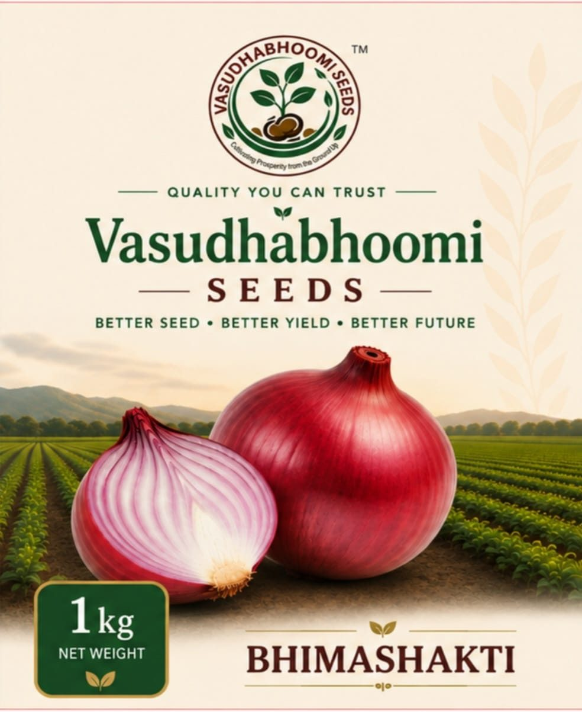

◎
Vision दृष्टीकोन
To build a trusted seed brand that transforms farming through quality, innovation, and sustainable growth. गुणवत्ता, नवोपक्रम आणि शाश्वत वाढ यांच्या माध्यमातून शेतीचे रूपांतर करणारा विश्वासार्ह बियाणे ब्रँड उभारणे.
Quality you can trust
A trusted seed brand from Rahuri, helping farmers grow better crops, better returns, and a better future — starting with Bhimashakti onion seed. राहुरीतील विश्वासार्ह बियाणे ब्रँड. शेतकऱ्यांना अधिक चांगले पीक, अधिक चांगला परतावा आणि अधिक चांगले भविष्य — भीमाशक्ती कांदा बियाण्यापासून.
Better seed · Better yield · Better future


About the brand ब्रँड परिचय
Vasudhabhoomi Seeds LLP is packed and marketed from Kangar Bk, Taluka Rahuri, District Ahilyanagar. We stand with farmers through quality seed and practical crop advice — not slogans alone. वसुधाभूमी सिड्स LLP हे कांगर बु., तालुका राहुरी, जिल्हा अहिल्यानगर येथून पॅक व मार्केट केले जाते. आम्ही शेतकऱ्यांबरोबर दर्जेदार बियाणे आणि व्यावहारिक पीक सल्ल्यासह उभे राहतो.
To build a trusted seed brand that transforms farming through quality, innovation, and sustainable growth. गुणवत्ता, नवोपक्रम आणि शाश्वत वाढ यांच्या माध्यमातून शेतीचे रूपांतर करणारा विश्वासार्ह बियाणे ब्रँड उभारणे.
To provide farmers with quality seeds and practical agricultural solutions that support better crops, better returns, and a better future. शेतकऱ्यांना दर्जेदार बियाणे आणि व्यावहारिक कृषी उपाय देणे, जे अधिक चांगले पीक, अधिक चांगला परतावा आणि अधिक चांगले भविष्य देण्यास मदत करतात.
Flagship variety मुख्य वाण
Bhimashakti onion variety — improved management guide. Attractive deep-red, firm bulbs with strong yield and storage. भीमाशक्ती कांदा वाण: सुधारित व्यवस्थापन मार्गदर्शक. घट्ट, आकर्षक लाल गड्डा, उच्च उत्पादन आणि चांगली साठवण.



Bhimashakti · field handbook भीमाशक्ती · शेत मार्गदर्शक
Practical steps from climate and nursery to harvest and storage — written for the farmer in the field. हवामान आणि रोपवाटिकेपासून काढणी व साठवणुकीपर्यंत — शेतातील शेतकऱ्यासाठी व्यावहारिक मार्गदर्शन.
| Growth stageपीक वाढीचा टप्पा | Needed climateआवश्यक हवामान | Temperatureयोग्य तापमान | Scientific effectशास्त्रीय परिणाम |
|---|---|---|---|
| Vegetative growth (early)कायिक वाढ (सुरुवातीचा काळ) | Cool, medium humidityथंड आणि मध्यम आर्द्रता | 15°C – 25°C | Leaf count and stem girth grow in balance.पानांची संख्या व खोडाचा घेर व्यवस्थित वाढतो. |
| Bulb fillingगड्डा पोसण्याचा काळ | Warm, dry, more sunlightउष्ण, कोरडे व जास्त सूर्यप्रकाश | 20°C – 30°C | Photosynthates are stored in the bulb.प्रकाश संश्लेषणातून अन्नद्रव्ये गड्ड्यात साठवली जातात. |
Note: If temperature rises above 35°C while the bulb is filling, the onion can mature early. Bulbs stay small or the neck becomes thick. टीप: गड्डा पोसताना तापमान ३५°सें. पेक्षा जास्त झाल्यास कांदा मुदतपूर्व परिपक्व होऊन गड्ड्याचा आकार लहान राहतो किंवा मान जाड होते.
Medium to heavy soil, good organic carbon, and proper drainage. मध्यम ते भारी, सेंद्रिय कर्ब चांगला असलेली व सुयोग्य निचऱ्याची जमीन.
3 to 4 kg per acre (7.5 to 10 kg per hectare). ३ ते ४ किलो प्रति एकर (हेक्टरी ७.५ ते १० किलो).
1 to 1.2 kg seed on 3 guntha (300 sq. m) raised beds. १ ते १.२ किलो बियाण्यासाठी ३ गुंठे (३०० चौ.मी.) गादीवाफे.
Transplant at 40–45 days. Spacing 15 cm (rows) × 10 cm (plants). पुनर्लागवड: ४० ते ४५ दिवस. अंतर: १५ सें.मी. (ओळीत) × १० सें.मी. (रोपांत).
Recommended chemical dose for onion: 100:50:50 kg N:P:K per hectare (40:20:20 kg per acre). कांदा पिकासाठी शिफारस केलेली रासायनिक खतमात्रा १००:५०:५० किलो नत्र : स्फुरद : पालाश प्रति हेक्टर (म्हणजे ४०:२०:२० किलो प्रति एकर).
| Timeवेळ | Chemical fertilizer (per acre)रासायनिक खत प्रयोग (प्रति एकरी) | Main nutrientsमुख्य घटक |
|---|---|---|
| At plantingलागवडीच्या वेळी | 2 bags urea + 2.5 bags SSP + 0.5 bag MOP२ बॅग युरिया + २.५ बॅग सिंगल सुपर फॉस्फेट + ०.५ बॅग म्युरेट ऑफ पोटॅश | 50% N, all P and Kनत्र (५०%), सर्व स्फुरद व पालाश |
| At 30 days३० दिवसांनी | 1 bag urea१ बॅग युरिया | 25% Nनत्र (२५%) |
| At 45 days४५ दिवसांनी | 1 bag urea१ बॅग युरिया | 25% Nनत्र (२५%) |
Manage irrigation by soil type, weather, and crop stage. जमिनीचा प्रकार, हवामान आणि वाढीच्या टप्प्यानुसार पाणी व्यवस्थापन करावे.
| Stageवाढीचा टप्पा | When to irrigateपाणी देण्याची वेळ / कालावधी |
|---|---|
| At transplantingपुनर्लागवडीच्या वेळी | 1st watering (light)१ ले पाणी (हलके पाणी) |
| After plantingलागवडीनंतरचा काळ | 2nd watering (ambavni / establishment)२ रे पाणी (आंबवणी) |
| Vegetative growthकायिक वाढीचा काळ | From planting up to 30–35 daysलागवडीपासून ३० ते ३५ दिवसांपर्यंत |
| Bulbing (neck and bulb formation)कांदा फुगण्याचा काळ (मान व गड्डा बनणे) | 40 to 80/90 days after plantingलागवडीनंतर ४० ते ८०/९० दिवसांपर्यंत |
| Pre-harvestकाढणीपूर्व काळ | From 90 days until harvest९० दिवसांनंतर ते काढणीपर्यंत |
Note: Stop irrigation completely 15–20 days before harvest. टीप: काढणीपूर्वी १५ ते २० दिवस आधी पाणी पूर्णपणे बंद करावे.
120 to 130 days after transplanting, when 50% of onion necks have fallen over. पुनर्लागवडीनंतर १२० ते १३० दिवसांनी (५०% कांद्याची मान मोडल्यावर) काढणी करावी.
After harvest, keep bulbs in the field covered with tops for 3–4 days. Then dry in shade for 10–12 days before storing. काढणीनंतर कांदा ३ ते ४ दिवस पाला झाकून ठेवावा व नंतर १० ते १२ दिवस सावलीत चांगला सुकवून मगच साठवणुकीत ठेवावा.
Field problems · scientific reasons शेतातील समस्या · शास्त्रीय कारणे
Know the cause, then correct the practice. This is the same science from our Bhimashakti management guide. कारण समजून मग उपाय. भीमाशक्ती व्यवस्थापन मार्गदर्शकातील शास्त्रीय माहिती.
Seed stalks in onion are untimely shift of the plant into the reproductive stage. Main scientific causes: कांद्यामध्ये बियांच्या दांड्या (डेंगळे) येणे ही वनस्पतीच्या प्रजनन टप्प्यातील असमयी वाढ आहे. मुख्य शास्त्रीय कारणे:
Sudden temperature drop: If young plants stay below 10–15°C for a long period, hormones change and the crop skips vegetative growth and goes to seed formation.तापमानातील अचानक घट: रोपांच्या सुरुवातीच्या काळात दीर्घ काळ तापमान १०° ते १५° सें. पेक्षा कमी राहिल्यास संप्रेरकांच्या बदलामुळे पीक कायिक वाढ सोडून थेट बी निर्मितीकडे वळते.
Over-aged seedlings: Seedlings older than 45–50 days, or with stem thicker than 0.8 cm (8 mm), can raise bolting up to 80% due to situvenal signals.अतिवयाच्या रोपांची लागवड: ४५–५० दिवसांपेक्षा जास्त वयाची किंवा ०.८ सें.मी. (८ मिमी) पेक्षा जास्त जाड खोड असलेली रोपे वापरल्यास डेंगळे येण्याचे प्रमाण ८०% पर्यंत वाढते.
Unbalanced nitrogen: Excess N early, then sudden N shortage or water stress at bulbing, pushes the plant to throw a stalk.असंतुलित नत्र व्यवस्थापन: सुरुवातीला नत्राचा अतिवापर आणि नंतर गड्डा फुगण्याच्या काळात नत्राची अचानक कमतरता किंवा पाण्याचा ताण बसल्यास वनस्पती ताणात येऊन डांगर फेकते.
Off-season planting: Late or wrong-season planting of Rangda / Rabi types changes photoperiod and causes bolting.हंगामाव्यतिरिक्त लागवड: रांगडा / रब्बीचे वाण योग्य वेळेपेक्षा उशिरा किंवा चुकीच्या हंगामात लावल्यास फोटोपीरियड बदलामुळे बोल्टिंग होते.
Yellow or black leaves are not always bolting. They often come from nutrient shortage or stress: पाने पिवळी किंवा काळी पडणे हे थेट बोल्टिंगशी संबंधित नसून अन्नद्रव्यांची कमतरता किंवा जैविक / अजैविक ताणामुळे होते:
Nitrogen shortage: Older (lower) leaves yellow first and overall growth stalls.नत्र कमतरता: जुनी (खालची) पाने आधी पिवळी पडतात आणि संपूर्ण झाडाची वाढ खुंटते.
Sulphur shortage: New (upper) leaves yellow — sulphur does not move inside the plant.गंधक कमतरता: नवीन (वरची) पाने पिवळी पडतात (गंधक वनस्पतीमध्ये फिरत नाही).
Potash shortage: Leaf tips look burnt and turn brown.पालाश कमतरता: पानांची टोके जळाल्यासारखी होऊन तपकिरी पडतात.
Water or salt stress: High soil salinity or waterlogging (low root oxygen) dries leaf tips.पाण्याचा किंवा क्षारांचा ताण: जमिनीची क्षारता जास्त असल्यास किंवा मुळांना प्राणवायू कमी पडल्यास (दलदल) पानांची टोके सुकतात.
Fungal blight (karpa): White / grey spots, then Alternaria can turn leaves black or grey and dry them.बुरशीजन्य रोग (करपा): करपाच्या प्रादुर्भावामुळे पानांवर पांढरे / करडे ठिपके पडतात आणि नंतर अल्टरनेरिया बुरशीमुळे पाने काळी / करडी पडून सुकतात.
Why farmers choose us शेतकरी आमची निवड का करतात
Packed and marketed by Vasudhabhoomi Seeds LLP with GST-registered operations from Rahuri.वसुधाभूमी सिड्स LLP द्वारे पॅक व मार्केट, राहुरीतील GST नोंदणीकृत कामकाज.
Not just a packet — a full Bhimashakti management guide in Marathi and English.फक्त पॅकेट नाही — भीमाशक्तीचे संपूर्ण व्यवस्थापन मार्गदर्शक मराठी आणि इंग्रजीत.
Better seed, better yield, better future — for the farmer and for the land.चांगले बियाणे, चांगले उत्पादन, चांगले भविष्य — शेतकऱ्यासाठी आणि जमिनीसाठी.